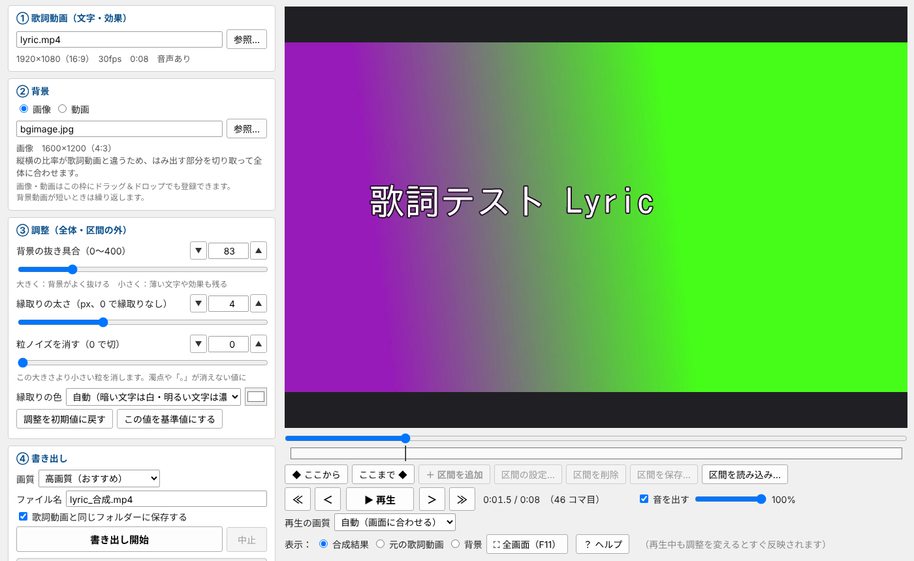
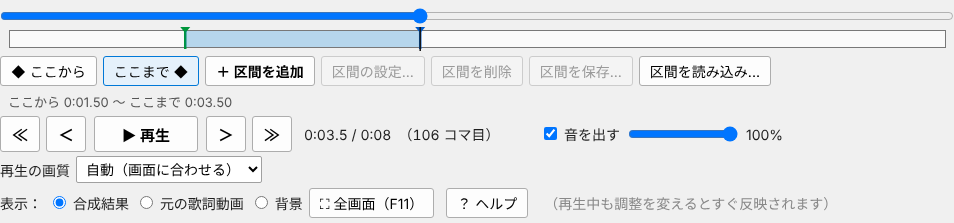
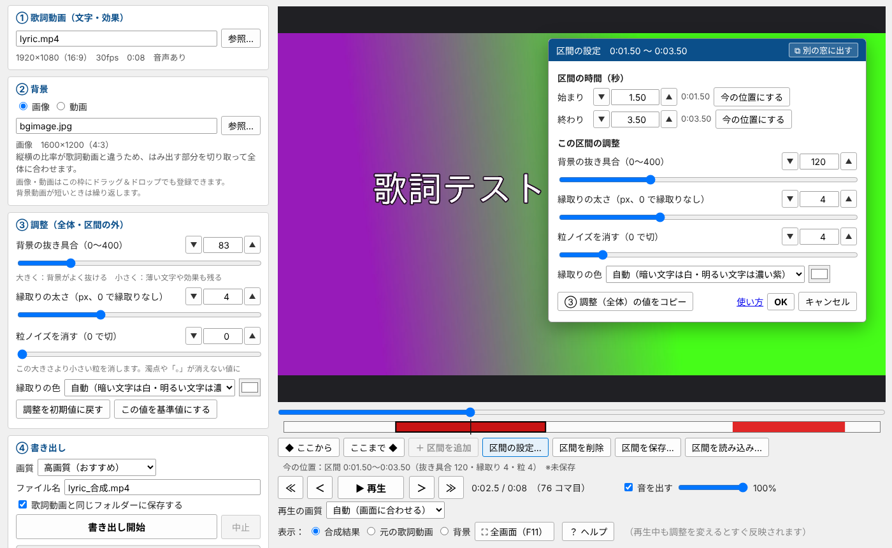
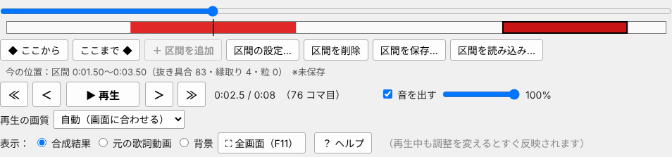

1. このアプリでできること
- 歌詞動画（文字や効果が入った動画）から、背景の部分だけを自動で抜き、文字と効果を別の背景に重ねます。
- 背景には画像または動画を使えます。背景動画が歌詞動画より短いときは、繰り返して使います。
- 文字のまわりに縁取りを付けて、背景の上でも読みやすくできます。
- 場面ごとに背景の抜け方が違うときは、区間ごとに別の調整値を使えます。
- 合成した結果を MP4 動画として書き出せます。音声は歌詞動画のものをそのまま使います。
2. はじめに（動作環境・起動）
| ブラウザ | Google Chrome または Microsoft Edge（パソコン版の最新版） |
|---|---|
| 動画の形式 | MP4（H.264 など）。背景画像は JPEG・PNG など一般的な画像 |
| 起動 | index.html を Chrome または Edge で開きます（ブラウザのウィンドウにドラッグしても開けます）。インターネットにつながっていなくても動きます。 |
3. 画面の見かた

画面全体。左に設定、右にプレビューと操作ボタンがあります。
| ① 歌詞動画 | 文字・効果が入った元の動画を選びます。 |
|---|---|
| ② 背景 | 重ねる先の背景（画像または動画）を選びます。 |
| ③ 調整 | 背景の抜き具合・縁取りなどを決めます。区間を作った場合は「区間の外」で使う値になります。 |
| ④ 書き出し | 画質とファイル名を決めて、MP4 に書き出します。 |
| プレビュー | 今の位置の合成結果が表示されます。調整を変えるとすぐ反映されます。 |
| 時間のスライダー | 動かすと、その位置のコマが表示されます。 |
| 区間のバー | スライダーのすぐ下の細いバーです。作った区間が 赤色で表示されます。 |
| 操作ボタン | 区間の操作、再生・コマ送り、音量、表示の切り替え、全画面などのボタンが並んでいます。 |
4. 基本の使い方
- 歌詞動画を選ぶ
① の 参照... を押して歌詞動画を選びます。ファイルを ① の枠にドラッグ＆ドロップしても登録できます。 - 背景を選ぶ
② で「画像」か「動画」を選び、参照... で背景を選びます（ドラッグ＆ドロップでも可）。縦横の比率が違うときは、はみ出す部分を切り取って全体に合わせます。 - プレビューで確認しながら調整する
時間のスライダーやコマ送りでいろいろな場面を見ながら、③ の値を調整します（各項目の説明）。再生 で動きも確認できます。 - うまく抜けない場面だけ区間で直す
一部の場面だけノイズが残る・文字が欠けるときは、その場面を区間にして別の値で調整します（区間ごとの調整）。 - 書き出す
④ で画質を選び、書き出し開始 を押して保存先を決めると、MP4 が作られます。
5. ③ 調整の各項目
数値は、スライダー・数値欄への入力のほか、数値欄の両側の ▼ ▲ で 1 ずつ細かく変えられます。押し続けると連続で変わり、だんだん速くなります。
| 背景の抜き具合 （0～400） |
歌詞動画の背景色との「色の差」がこの値より小さい部分を、透明（背景）として抜きます。 大きくする：背景がよく抜け、ノイズや模様の残りが減ります。ただし薄い文字・光の効果・影まで消えやすくなります。 小さくする：薄い文字や効果も残ります。ただし背景の模様やざらつきが残りやすくなります。 まずは初期値の 83 から始めて、少しずつ動かすのがおすすめです。 |
|---|---|
| 縁取りの太さ （0～12 px） | 文字のまわりに付ける縁の太さです。0 で縁取りなし。背景が明るい・模様が多いときは太めにすると読みやすくなります。 |
| 粒ノイズを消す （0～30） |
抜いたあとに残る小さな粒（点々）を消します。この値の大きさの四角より面積の小さいかたまりを消します。0 で使いません。 大きくしすぎると、濁点（゛）や句点（。）などの小さな文字の部分まで消えるので、消えない値に留めてください。 |
| 縁取りの色 |
自動：暗い文字には白、明るい文字には濃い紫の縁を付けます（文字ごとに自動で切り替え）。 白・黒・濃い紫：いつもその色。指定した色：右の色の四角を押して好きな色を選べます。 |
| 調整を初期値に戻す | 「基準値」を保存していればその値に、なければアプリの初期値（抜き具合 83・縁取り 4・粒 0・自動）に戻します。 |
| この値を基準値にする | 今の値を「基準値」として保存します。よく使う値を登録しておくと、調整を初期値に戻す でいつでもその値に戻せます。 |
6. 区間ごとの調整
6-1. 区間とは
歌詞動画は場面によって背景の色や模様が変わるため、1 つの調整値では全体がうまく抜けないことがあります。たとえば、
- サビの部分だけ背景がちらつき、ノイズや模様が残る
- ある場面だけ文字の色が背景に近く、文字が欠ける・薄くなる
このようなときは、その場面だけを「区間」（ここから～ここまで）として指定し、区間の中だけ別の調整値を使います。区間の外は ③ 調整の値がそのまま使われます。
6-2. 区間を作って調整する手順
- 直したい場面を探す
まず ③ 調整で、動画全体がだいたいうまく抜けるように合わせておきます。
次に、時間のスライダー・再生・コマ送り（← →）で、ノイズが出る・文字が欠けるなど、うまくいかない場面の始まりを探します。 - 「ここから」を指定する
問題の場面が始まる位置で ここから を押します。区間のバーに緑の印が付きます。 - 「ここまで」を指定する
そのまま再生やコマ送りで問題の場面が終わる位置まで進め、ここまで を押します。青の印が付き、その間が水色になります。

「ここから」（緑）と「ここまで」（青）を指定したところ。間が水色になり、区間追加 が押せるようになります。 - 区間を追加する
区間追加 を押します。区間のバーに 赤い区間ができます。
作ったばかりの区間には、③ 調整（全体）と同じ値が入っています。 - 区間の設定を開く
赤い区間が選ばれている（黒い枠が付いている）状態で 区間設定 を押します。シーク位置（時間のスライダーの位置）が赤い区間の上にあるときも押せて、その区間の設定が開きます。赤い区間をダブルクリックしても開けます。
今の位置が区間の外だったときは、区間の始まりへ自動で移動します。
スマホの縦向きでは、画面が 3 段に分かれ、下段に区間の設定が出ます（くわしく）。 - ノイズなどが消えるように調整する
「区間の設定」の小さな窓で、背景の抜き具合・粒ノイズを消す・縁取りなどを調整します。値を変えると、プレビューにすぐ反映されます。
窓は開いたまま、コマ送りや再生で区間のいろいろな位置を確認できます。窓はタイトルの部分をドラッグして動かせます。
窓がプレビューに重なって見にくいときは、窓の右上の ⧉ 別の窓に出す を押してください（くわしく）。
数値の両側の ▼ ▲ で 1 ずつ細かく変えられます（押し続けると連続）。区間の設定の窓。この例では、背景の抜き具合を 120、粒ノイズを消すを 4 にしています。- ノイズ・模様が残る → 背景の抜き具合を大きくする。点々が残るなら粒ノイズを消すも少し上げる
- 文字が欠ける・効果が消える → 背景の抜き具合を小さくする
- 詳しくは 6-3. ノイズ・欠けの直し方 を見てください
- 必要なら区間の範囲を直す
窓の「始まり」「終わり」に秒数を入れて範囲を直せます。両側の ▼ ▲ を押すと 1 コマずつ前後に動き、その位置がプレビューに表示されるので、区間の境目を確かめながら合わせられます。今の位置にする を押すと、今表示している位置をそのまま始まり・終わりにできます。 - OK で確定する
うまく抜けたら OK を押します。キャンセル を押すと、窓を開く前の状態に戻ります。
③ 調整（全体）の値をコピー を押すと、全体の値を入れ直してやり直せます。 - ほかの場面も同じように直す
問題のある場面ごとに 1～8 をくり返して、区間をいくつでも作れます。最後に 区間を保存 しておくと、あとで続きから作業できます。
・区間を作ったり直したりして保存していないときは、区間の情報の右に「※未保存」と表示されます。
・別の歌詞動画を選ぶと、区間は消えます（区間は歌詞動画ごとのものです）。
区間の設定をブラウザの外に出す
区間の設定の窓の右上にある ⧉ 別の窓に出す を押すと、設定がブラウザの外の別の窓になります。
- 別の窓は画面のどこへでも動かせて、大きさも変えられます。いつも手前に表示されるので、プレビューを大きく見ながら調整できます。
- 別の窓の中でも ← → でコマ送り、スペース で再生・停止ができます。
- OK で確定、キャンセル で元に戻します。窓の × で閉じたときはキャンセルと同じ（変更を取り消し）になります。
- 一度別の窓に出すと、次に区間の設定を開いたときも別の窓で開きます。ブラウザの中に戻したいときは ↩ ブラウザの中に戻す を押してください。
- 別の窓を開いたまま、区間のバーでほかの区間をダブルクリックすると、同じ窓の中身がその区間に切り替わります。
6-3. ノイズ・欠けの直し方
| こんなとき | こうする |
|---|---|
| 背景の模様・ざらつきが文字のまわりに残る | 背景の抜き具合を 5～20 ずつ大きくする |
| 画面のあちこちに小さな点々が残る | 粒ノイズを消すを 2～6 くらいにする（濁点や「。」が消えない範囲で） |
| 文字の一部が欠ける・細くなる | 背景の抜き具合を小さくする |
| 光・ぼかし・影などの効果が消える | 背景の抜き具合を小さくする。残ったざらつきは粒ノイズを消すで取る |
| 濁点や「。」が消えた | 粒ノイズを消すを小さくする |
| 文字が背景に埋もれて読みにくい | 縁取りを太くする・縁取りの色を変える |
ノイズは止まった 1 コマでは目立たなくても、動くと目立つことがあります。最後に 再生 で区間全体を通して確認してください。
6-4. 区間のバーの操作

区間のバー。赤い部分が区間、黒い枠が付いているのが選ばれている区間、黒い縦線が今の位置です。
| 何もない所をクリック | その位置へ移動します。 |
|---|---|
| 赤い区間をクリック | その区間を選びます（黒い枠が付きます）。 |
| 赤い区間をダブルクリック | 区間の設定を開きます。 |
| 赤い区間を右クリック | メニュー：区間の設定・区間の始まりへ移動・区間の終わりへ移動・区間削除 |
| 何もない所を右クリック | メニュー：その位置を「ここから」にする・「ここまで」にする・印を消す |
| 区間削除 | 選んでいる区間削除します（確認があります）。 |
区間のバーの下には、今の位置が区間の中か外か、区間の中ならその区間の調整値が表示されます。
6-5. 区間の保存・読み込み
保存する
- 区間保存 を押すと、保存の画面が歌詞動画のあるフォルダーで開きます。歌詞動画と背景が同じフォルダーなら、そのままそこに保存できます。
- 区間ファイル（
○○_区間.json）には、区間・③ 調整（全体）の値・歌詞動画と背景のファイル名が入ります。 - あわせて、歌詞動画と背景がどこにあるかを、このブラウザの中に覚えておきます。
読み込む
- 区間読み込み で区間ファイルを選ぶと、覚えておいた場所から歌詞動画と背景も自動でセットされます。区間ファイルを画面にドラッグ＆ドロップしても同じです。
- ブラウザを開き直したあとの最初の読み込みでは、「読み込む」ボタンの付いた確認が出ます。押すとブラウザに「ファイルの表示を許可しますか？」と出るので、「許可」を押してください（ブラウザの決まりで、この確認は省けません）。
- 保存したときと違うときは確認が出ます：
- 歌詞動画・背景の中身が変わっている（大きさや更新日時が違う）とき →「このファイルを使いますか？」
- 保存した場所に見つからない（移動した・名前を変えた）とき → フォルダーを選ぶと、その中（サブフォルダーも含む）から同じ名前のファイルを探し、見つかった場所を見せて「このファイルを使いますか？」と確認します。
- 別のパソコン・別のブラウザで保存した区間ファイルや、Windows 版で保存した区間ファイルは、場所の記録がないため、フォルダーを選んで探す方法になります。区間ファイルといっしょに歌詞動画・背景を選ぶ（複数のファイルを同時に選ぶ）こともできます。
・場所の記録は、このパソコンのこのブラウザ（Chrome または Edge）の中だけにあります。ブラウザの「閲覧履歴データの削除」でサイトのデータを消すと、記録も消えます（その場合はフォルダーを選んで探す方法になります）。
・区間ファイルは Windows 版（VideoEditing）と同じ形式です。どちらで保存したものも読み込めます。
7. 再生・コマ送り・表示
| ≪ ≫ | 1 秒戻る／進む |
|---|---|
| ＜ ＞ | 1 コマ戻る／進む。押し続けると連続で動きます。 |
| 再生 | 合成結果を再生します。再生中に調整を変えると、次のコマからすぐ反映されます。最後まで再生したあとに押すと、最初から再生します。 |
| 音を出す・音量 | 再生のときに歌詞動画の音を出すかどうかと、その音量です（書き出す動画の音量は変わりません）。 |
| 再生の画質 | 再生するときの画面の細かさです。自動はプレビューの枠に合わせます（スマホでは小さめ）。カクつくときは「軽い（横640）」や「とても軽い（横360）」にしてください。再生中は軽い計算で表示するため、止めたときの表示とごくわずかに違うことがあります。書き出しの画質には関係ありません。 |
| 表示： | 合成結果／元の歌詞動画／背景 を切り替えて表示できます。 |
| GPU で再生 | オン（はじめの設定）にすると、再生中の合成をグラフィック（GPU）で計算して、滑らかに再生します（スマホでは特に効果があります）。再生中は、粒ノイズの消し方などが簡単な計算になるため、止めたときの表示とごくわずかに違うことがあります。止めたときの表示と書き出しは、いつも正確な計算です。再生がおかしいときはオフにしてください。 |
| ⛶ 全画面（F11） | プレビューを画面いっぱいに表示します。Esc で戻ります。プレビューのダブルクリックでも切り替えられます。スマホでは、回したほうが大きく映るときは自動で回して表示します（くわしく）。 |
再生中は、画面の下に次のような情報が表示されます。
再生中（GPU） 30 コマ/秒（1054×592）｜読込 3ms 描画 1.0ms 背景色の推定 2ms 待ち 0ms 飛ばし 0
| ○ コマ/秒 | 1 秒間に表示できているコマの数（元の動画のコマ数に近いほど滑らか） |
|---|---|
| 読込・変換・合成 | 1 コマを用意するのにかかっている時間 |
| 待ち・飛ばし | 合成が間に合わなかった時間と、表示を飛ばしたコマの数（多いときは再生の画質を下げてください） |
8. 書き出し
- ④ の 画質 を選びます。「最高画質（ファイル大）」「高画質（おすすめ）」「標準」から選べます。
- ファイル名 を確認します（歌詞動画を選ぶと「元の名前_合成.mp4」が自動で入ります）。
- 書き出し開始 を押します。「歌詞動画と同じフォルダーに保存する」がオンなら、歌詞動画と同じフォルダーにそのまま書き出します（下の説明を見てください）。
- 進み具合・速さ・残り時間が表示されます。終わると、保存した場所（フォルダー名\ファイル名）が表示されます。途中でやめるときは 中止 を押します（途中までのファイルは消えます）。
- 書き出し中は、画面の下に「書き出し中です」のお知らせが出て、画面が自動で消えないようになります（終わると元に戻ります）。画面を消したり、ほかのアプリやタブに切り替えたりしないでください。スマホではブラウザが処理を止めてしまい、書き出しが途中で終わることがあります。電源ボタンで画面を消した場合は止められません。長い動画は充電しながら書き出すと安心です。
歌詞動画と同じフォルダーに保存する
- オン（はじめの設定）：保存の画面を出さずに、歌詞動画と同じフォルダーへ書き出します。
- フォルダーごとに最初の 1 回だけ確認があります：
- 「書き出し先のフォルダー」の確認で フォルダーを確認 を押す
- 歌詞動画のフォルダーが開いた状態で「フォルダーの選択」の画面が出るので、そのまま 「フォルダーの選択」 を押す
- ブラウザの確認（「変更を保存しますか？」など）で 「変更を保存」（「許可」）を押す
- ブラウザを開き直したあとの最初の書き出しでは、書き込みの許可の確認だけがもう一度出ます。
- 同じ名前のファイルがすでにあるときは、上書きせずに「○○_合成 (2).mp4」のように番号を付けて保存します。
- 確認の画面で 保存先を選ぶ を押すと、今回だけ保存先を選べます。
- オフ：書き出すたびに保存の画面が出ます（歌詞動画のフォルダーで開きます）。
そのほか
- 書き出す動画の大きさ・コマ数は歌詞動画と同じです。音声は歌詞動画のものを作り直さずにそのまま入れます。
- 書き出しには、書き出しを始めたときの ③ 調整と区間の値が使われます。
- 書き出し中は、ほかの操作はできません。ブラウザのタブを閉じると書き出しは止まります。
スマホ・タブレットで使う
スマホ（Android の Chrome がおすすめ）でも使えます。画面の大きさに合わせて、自動でスマホ用の配置になります。
- 縦向き：ふだんは、上にプレビュー、その下にボタンと ① ～ ④ の欄が並び、画面全体を上下にスワイプして使います。ボタンは上から 区間読み込み → 区間設定 区間削除 区間保存 → ここから ここまで 区間追加 → 時間のスライダー・区間のバー → ≪ ＜ 再生 ＞ ≫ の順に並びます（区間の情報の表示は省いています）。
- 縦向きで「区間設定」を押したとき：画面が同じ高さの 3 段に分かれます。段の大きさと位置は固定で、動くのは中段・下段の中身だけです。OK かキャンセルで区間の設定を閉じると、ふだんの画面に戻ります。
- 上段：動画のプレビュー（段の中に、歌詞動画の縦横比のまま収まります）。縦長（9:16）の歌詞動画は、横に回して大きく表示します。右上の小さなボタン（⟳ 右に回転中）を押すたびに「右に回す → 左に回す → 回さない」と切り替わり、選んだ向きは次からも使われます（縦長・横長の動画で別々に覚えます）。回すのは画面の表示だけで、書き出す動画の向きは変わりません。
- 中段：時間のスライダー・区間のバー・区間のボタン・再生や戻るのボタン・音量や表示の切り替え。ボタンの行は左右にスワイプすると、隠れているボタンが出てきます。
- 下段：区間の設定だけが出ます。上下にスワイプすると、いちばん下に OK・キャンセル・閉じる があります（① ～ ④ の欄は、区間の設定を閉じると出てきます）。
- 続けて区間を設定する：区間の設定の青い部分にある OK を押すと、その区間の変更が確定し、3 段の画面のまま続けられます。そのあとは、シーク位置（時間のスライダーや ＜ ＞ で動かした位置）が赤い区間の中に入ると、区間の設定が自動でその区間に切り替わります。
・どの区間の中にもないときは、設定の欄が灰色になり、触れなくなります。
・区間の設定を開いたまま ここから ここまで 区間追加 で新しい区間を作り、その中へ移動すれば、新しい区間もそのまま設定できます。
・青い部分の OK を押さずに別の区間へ移ったときは、その区間の変更は取り消されます。
・終わるときは、下の OK（変更を確定して閉じる）か、キャンセル・閉じる（OK を押していない変更を取り消して閉じる）を押します。
- 横向き：左にプレビュー、右に設定が並びます。横長（16:9）の歌詞動画に向いています。
- ① ～ ④ の見出しをタップすると、その欄を開いたり閉じたりできます。閉じているときも、見出しの右に今の値が表示されます。
- 区間の設定は、縦向きでは 3 段の下段に、横向きでは右側に出ます。プレビューを見ながら調整できます。
- 区間のバーの赤い区間は、ダブルタップで設定、長押しでメニューが出ます。
- 全画面（⛶ 全画面 またはプレビューをダブルタップ）では、縦長・横長のどちらの動画も、回したほうが大きく映るときは自動で回して画面いっぱいに表示します。回す向きは、3 段のときに回転ボタンで最後に選んだ向き（はじめは右）です。スマホを横に持って見ると、まっすぐに見えます。
- 全画面にすると、画面の上に「ダブルタップで戻ります」と 3 秒間表示されます。もう一度ダブルタップすると元の画面に戻ります。
- 区間の設定を開いたまま全画面にしたときは、動画の下に ≪ ＜ 再生（再生中は 停止） ＞ ≫ 戻す のボタンが出ます。全画面のまま区間の中を確かめられます。戻す（またはダブルタップ）で区間の設定の画面に戻ります。
書き出した動画はダウンロードとして保存されます。
スマホでは「GPU で再生」をオンにしておくと、再生が滑らかになります。それでもカクつくときは、再生の画質を「軽い（横640）」や「とても軽い（横360）」にしてください。スマホはパソコンより処理が遅いので、書き出しには時間がかかります。
9. キーボード操作
| ← / → | 1 コマ戻る／進む（押し続けると連続） |
|---|---|
| Shift＋← / → | 1 秒戻る／進む |
| スペース | 再生／停止 |
| F11 | 全画面の切り替え（Esc で戻る） |
| F1 | このヘルプを開く |
10. 困ったとき
動画を選んでも読み込めない
MP4（H.264）の動画を使ってください。Chrome・Edge 以外のブラウザでは動かないことがあります。
再生がカクつく
「再生の画質」を「軽い（横640）」や「標準（横960）」にしてください。スマホでは「GPU で再生」をオンにして、「とても軽い（横360）」にすると滑らかになります。ほかの重いアプリを閉じると改善することもあります。再生の滑らかさは書き出しの結果には影響しません。
GPU で再生中、場面が変わった直後に一瞬だけ背景が残る
「GPU で再生」では、背景色の推定が少し遅れて追いかけるため、場面が大きく変わった直後の数コマだけ背景が抜けきらないことがあります。止めたときの表示と書き出しは正確な計算なので、問題ありません。気になるときは「GPU で再生」をオフにしてください。
背景がうまく抜けない場面がある
区間ごとの調整 で、その場面だけ値を変えてください。
濁点や「。」が消える
「粒ノイズを消す」の値を小さくしてください。区間で使っている場合は、その区間の設定も確認してください。
区間ファイルを読み込んでも、歌詞動画・背景がセットされない
別のパソコン・Windows 版で保存した区間ファイルや、ファイルを移動した場合は、「フォルダーを選んで探す」でファイルのあるフォルダーを選んでください。区間読み込み で、区間ファイルと歌詞動画（と背景）をいっしょに選ぶこともできます（くわしく）。
書き出しが遅い
書き出しは元の大きさで 1 コマずつ合成するため、再生より時間がかかります。進み具合の横に残り時間の目安が表示されます。
スマホで書き出しが途中で止まる
書き出し中に画面を消したり、ほかのアプリやタブに切り替えたりすると、ブラウザが処理を止めてしまいます。書き出し中は画面が自動では消えないようになっていますが、電源ボタンで消した場合は止まります。終わるまでブラウザを表示したままにして、長い動画は充電しながら書き出してください（くわしく）。
新しい版にしたのに、スマホの表示が前のまま
ページを開き直してください。それでも変わらないときは、Chrome の「︙」→「設定」→「プライバシーとセキュリティ」→「閲覧履歴データを削除」で、「キャッシュされた画像とファイル」だけにチェックを入れて削除してから開き直してください（覚えておいたファイルの場所や設定は消えません）。